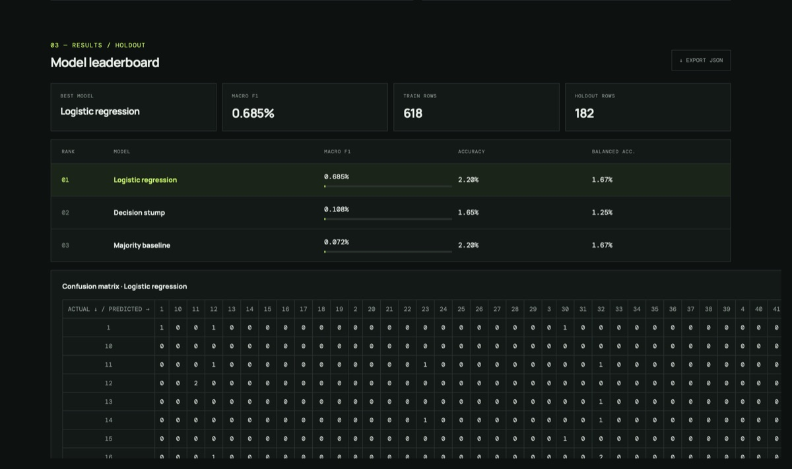
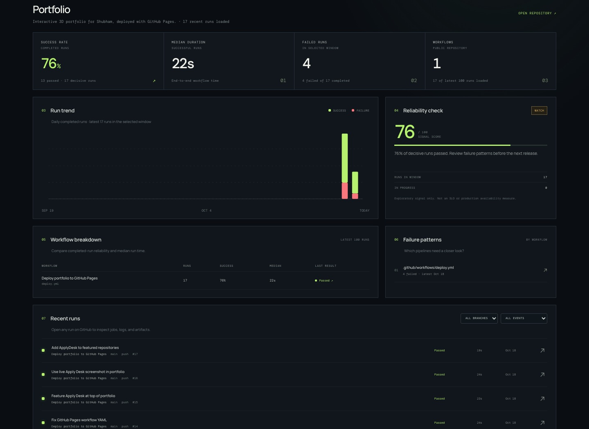
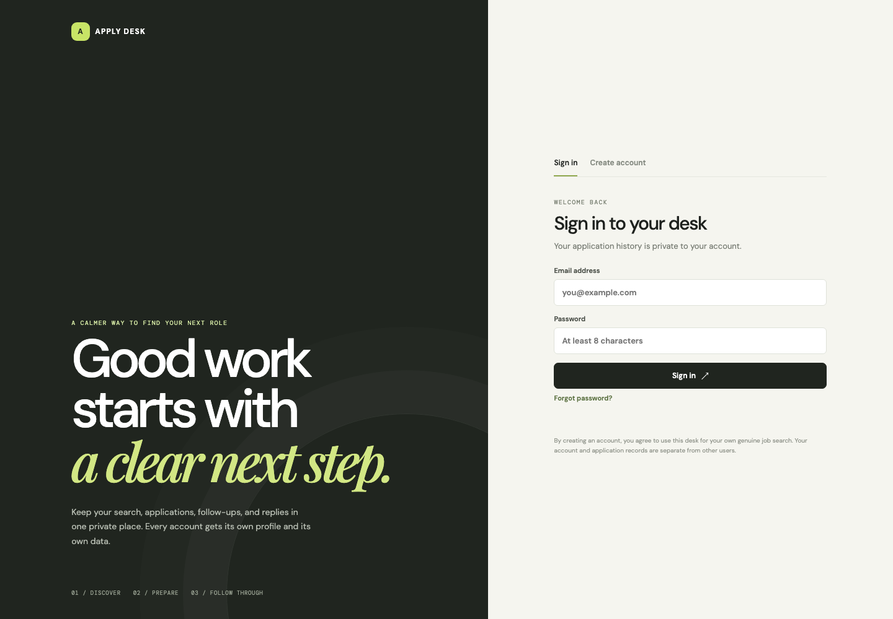
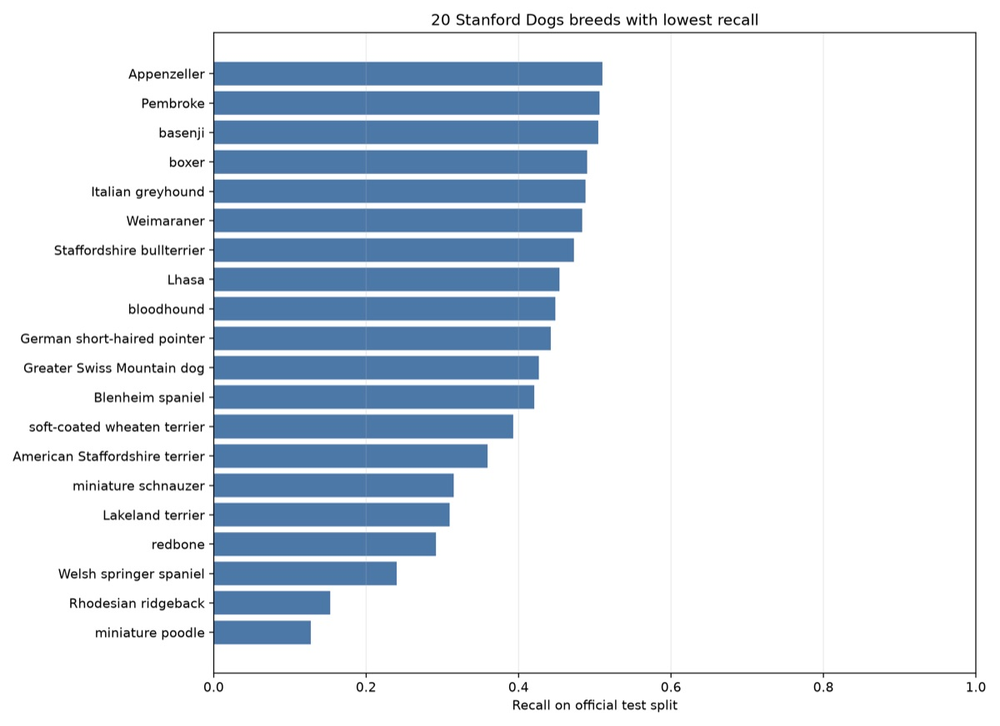
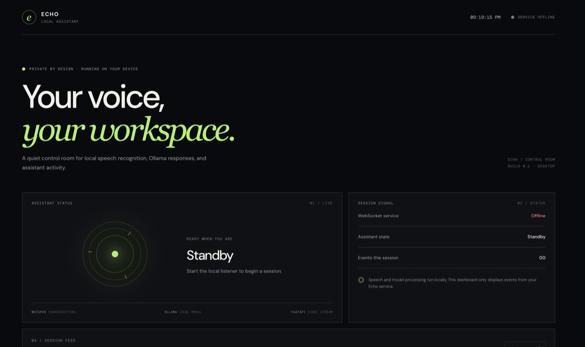
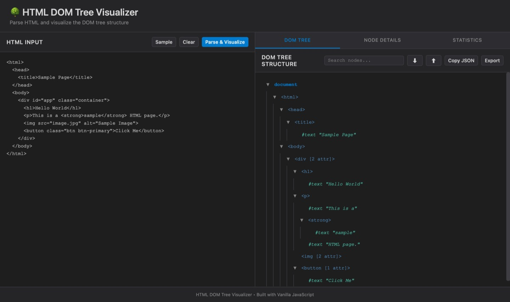
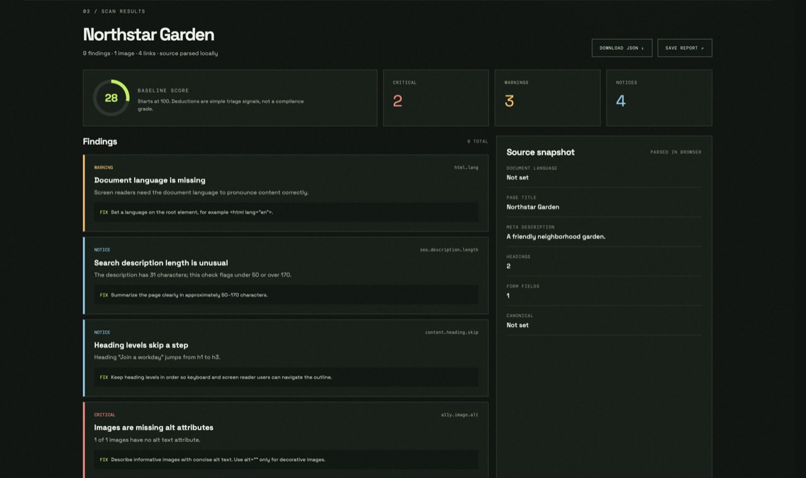

Full-stack software
React · Django REST · Supabase · REST APIs · account-aware workflows
SOFTWARE DEVELOPER PUNE, INDIA · OPEN TO WORK
Software, data & useful things.
I’m Shubham, an MCA candidate building projects across full-stack software, applied machine learning, AI, and iOS. I like making complicated ideas clear and useful.

LOCALLANGUAGES · FRAMEWORKS · TOOLS
Pick a technology to see it in action across my projects. Each chip filters the repository list below.
React · Django REST · Supabase · REST APIs · account-aware workflows
Leakage-aware workflows · held-out evaluation · model comparison · clear reporting
JavaScript · Python · React · Django · FastAPI · REST APIs · responsive interfaces · Git
Requirement clarification · task tracking · stakeholder updates · documentation · responsive checks · issue follow-through
EXPERIENCE · EDUCATION
Client-facing web work, a continuing MCA, and a growing set of software projects built hands-on.
TOP 10 REPOSITORIES · FROM GITHUB
A focused selection across full-stack software, applied ML, AI, and developer tools.
Ranked by resume strength and backed by project evidence.

LIVE DEMO · PUBLIC WORKFLOW HISTORY09 / RUNSCOPE · CI/CD HEALTH
LIVE SITE · SIGN-IN SCREEN02 / APPLY DESK · PRIVATE JOB SEARCH
RESEARCH FIGURE · HELD-OUT TEST03 / MEASURED BREED-LEVEL RECALL
REAL DASHBOARD · SERVICE OFFLINE04 / LOCAL DESKTOP PROTOTYPE
LIVE INTERFACE10 / DOM VISUALIZER · REAL INTERFACE
LIVE INTERFACE08 / SITESENTRY · REAL INTERFACEA LITTLE ABOUT ME
02 / 03I’m Shubham Meghani, an MCA candidate in Pune building across web applications, applied ML, AI prototypes, and iOS. I bring two months of client-focused website delivery experience, with a practical approach to requirements, communication, documentation, and quality checks.
JavaScript · Python · Java
React · Django REST · FastAPI
PyTorch · scikit-learn · SwiftUI
Git · GitHub Actions · REST APIs
Make the goal clear before choosing the framework, model, or tool.
Use working demos, measured results, and honest notes about what is still a prototype.
Build across disciplines, document the trade-offs, and improve the next iteration.
OPEN TO SOFTWARE OPPORTUNITIES
03 / 03Pune, India · 6265280847
MCA candidate · Building practical software across disciplines